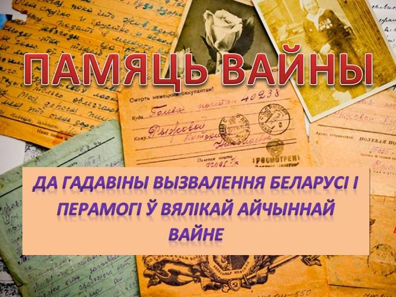
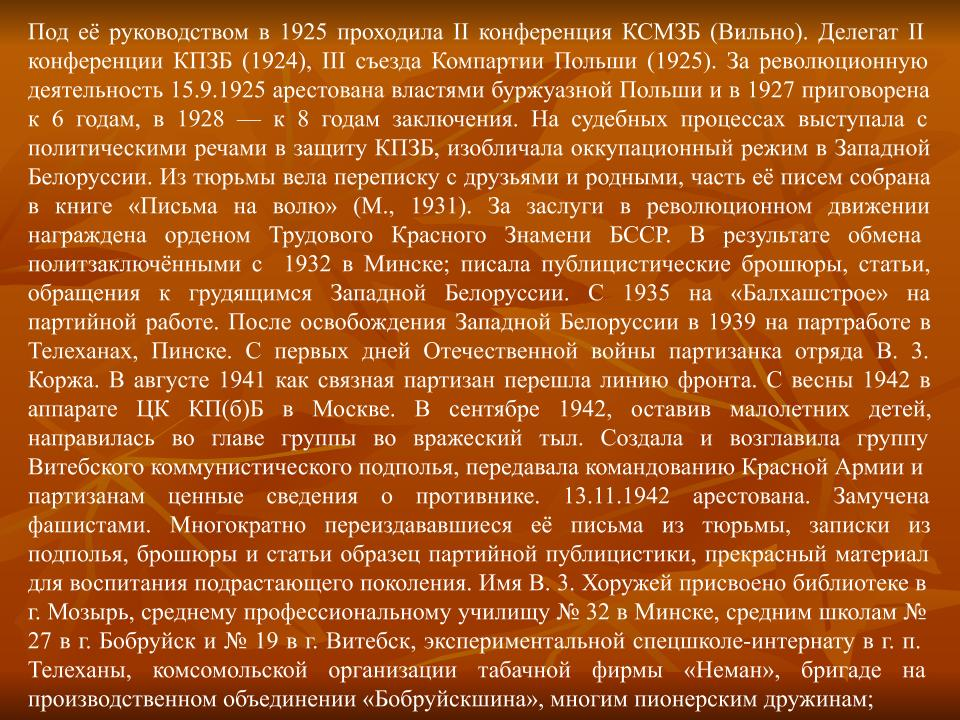
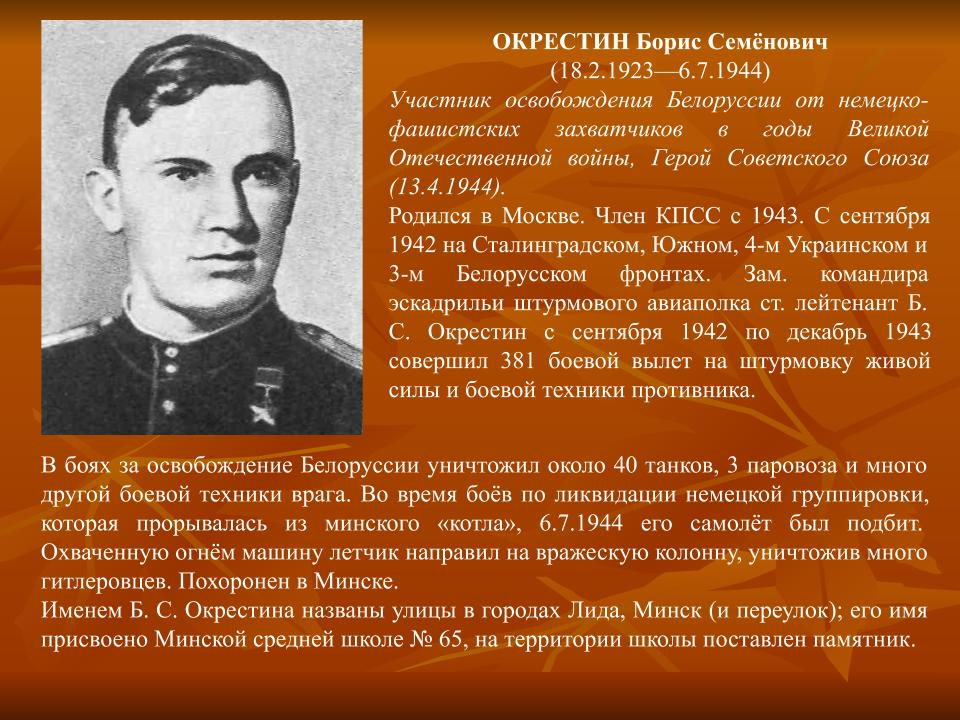

Гісторыя гімназіі ў гады ВАВ
З 1940 года ў будынку было размешчана вучылішча па падрыхтоўцы ваенных лётчыкаў, курсанты якога ў першыя дні Вялікай Айчыннай вайны бралі ўдзел у абароне Мінска. Многія з іх, прайшоўшы ўсе ваенныя выпрабаванні, у пасляваенныя гады дапамагалі вучням школы стварыць музей Баявой Славы, што існаваў да сярэдзіны 80-х гадоў.У гады вайны ў будынку школы быў размешчаны шпіталь.У 1944-1945 гадах будынак школы быў адноўлены сіламі будучых вучняў і іх бацькоў. Цяжкімі для школы былі пасляваенныя гады. У дакладной запісцы санітарнага інспектара горада Мінска, доктара Ліўшыца, ад 24 ліпеня 1945 года адзначалася, што 23 сярэднія і няпоўныя школы горада Мінска ў большасці сваёй у санітарна-тэхнічным плане не падрыхтаваныя да 1944/1945 навучальнага года. Школы не абаграваліся, не мелі дубэльтаў, адзінарныя шыбы былі часткова забітыя фанерай. Цэнтральнага ацяплення ні ў адной школе не было, галандскія печы пераважна не працавалі. Усталяваныя ў класных памяшканнях жалезныя печы былі не гігіенічнымі, не захоўвалі пастаянную тэмпературу на працяглы час і давалі вельмі нераўнамерны абагрэў. Школы не забяспечваліся палівам, таму вучні ў большасці школ у час заняткаў не здымалі верхняе адзенне і мерзлі ў кабінетах.Дошкі і парты былі зношаныя і не адпавядалі, як правіла, росту школьнікаў. Належны санітарны стан у класах у 1944/1945 навучальным годзе не падтрымліваўся. Большасць школ не былі забяспечаныя пітной вадой. Цітаны для кіпячонай вады адсутнічалі, а там, дзе яны былі, не мелі накрывак і замкоў, у выніку чаго вада забруджвалася. Не было буфетных пакояў для раздачы сняданкаў, а таксама спецыяльных людзей для абслугоўвання буфетаў. Сняданкі раздавалі класныя кіраўнікі непасрэдна ў класах. Адсутнічалі рукамыйнікі. Гэта не дазваляла наладзіць санітарны рэжым харчавання. Унутраныя каналізацыйныя туалеты не працавалі з-за адсутнасці вады і тэхнічнай няспраўнасці. Усё гэта прывяло да ўздыму колькасці інфекцыйных і прастудных захворванняў вучняў (брушны і сыпны тыфы, шкарлятына, адзёр, коклюш, ангіна і інш.). У адпаведнасці з пастановай Савета Народных Камісараў БССР ад 28 жніўня 1945 года 23-й школе былі выдзеленыя 2 швейныя машыны. Намеснік загадчыка ГАРАНА Правільшчыкаў у службовай запісцы адзначае, што ў 1945/1946 навучальным годзе ў горадзе будзе працаваць 24 школы, і што неабходна вызваліць будынак школы №19, таму што вучні гэтай школы ў мінулым навучальным годзе вучыліся ў памяшканні школы №23 – агулам 47 класаў на 30 класных пакояў, у выніку заняткі вяліся ў 4 змены, а гэта недапушчальна. У 1945 годзе школе №23 па ведамасці Мінгарвыканкама выдалі сшыткі. На 1 лістапада 1945 года ў школе №23 навучалася 950 вучняў у 22 класах. У справаздачы ГАРАНА па выніках працы школ горада за 1945/1946 навучальны год у ліку найлепшых дырэктараў названы дырэктар школы № 23 Ляонаў Г.М.


Гісторыя ветэранаў
Сарычaва Вера Дзмітрыеўна
Сарычaва Вера Дзмітрыеўна нарадзілася 15.09.1920г. ў в. Сасаў Разанскай вобласці. Бацька, Дзмітрый Андрэевіч, працаваў на чыгунцы, а падчас калектывізацыі сельскай гаспадаркі закліканы начальнікам калгасу. Маці, Варвара Андрэеўна, нарадзіла і выгадавала дзесяцёх дзяцей, сям'я ў Веры Дзмітрыеўны была вялікая і дружная. «Я была на чацвёртым курсе, калі нас заспела вайна. Студэнты неяк зарыентаваліся і праз тыдзень з'ехалі, а потым нельга было з'язджаць з Ленінграда. Нам датэрмінова зрабілі дзяржаўныя іспыты і далі дыпломы. Пасля вайны выйшла замуж і з мужам мы пасялілася ў Мінску. Муж працаваў фотакарэспандэнтам, а я была дырэктарам дзяржархіву Мінскай вобласці, пасля якога і выйшла на пенсію. Пазней я працавала намеснікам дырэктара па культурна-масавай рабоце парка імя Горкага, мы саджалі там гэтыя дрэвы нашымі рукамі, былі там кветкі, клумбы, дзіцячы гарадок. Цяжкая была маладосць, але ніхто не паддаваўся, змагаліся за сваю Радзіму, якая нас выгадавала. Кожны студэнт з'яўляўся сябрам партыі, я была сябрам Камуністычнай партыі Савецкага Саюза (КПСС). Вучыцеся, дзеткі і не дай Бог вам адчуць на сабе, што такое вайна. »


Канановіч Анатолiй Лявонцьевіч
Аляксандравіч Вячаслаў Іванавіч

Урокі памяці

Чытаем пра вайну
1.Васіль Быкаў. “Сотнікаў”, “У тумане”, “Абеліск”, “Знак бяды”, “Кар’ер” і інш.
2. Святлана Алексіевіч. “У вайны не жаночы твар”
3. Артур Зельскі. “Хатынь. Трагедыя беларускага народа”
4. Павел Гушынец, Андрэй Аўдзей. “Вайна дзяўчынкі Сашы”
5. Маленькія салдаты вялікай вайны
6. Аляксандр Суслаў “Малінавы набат”
7. І. Шамякін “Трывожнае шчасце”
8. «Сямнаццатай вясной», «Хлопцы-равеснікі», «Верасы на выжарынах» «Сасна пры дарозе», «Вецер у соснах», «Сорак трэці».
9. Зборнік “Ніколі не забудзем”
10. Алесь Адамовіч, Данііл Гранін “Блакадная кніга”
ВАВ ў назвах вуліц Савецкага раёна


